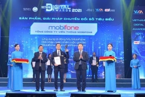
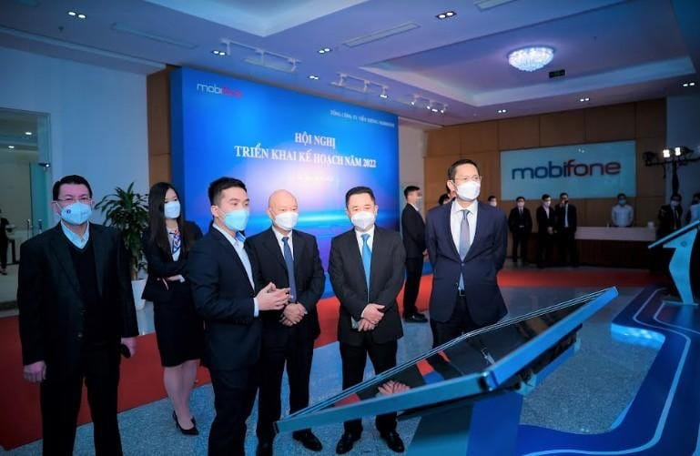

Là mạng viễn thông di động đầu tiên tại Việt Nam, MobiFone được thành lập ngày 16/04/1993 với tên gọi ban đầu là Công ty thông tin di động (VMS). Ngày 01/12/2014, MobiFone được chuyển đổi thành Tổng công ty Viễn thông MobiFone, thuộc Bộ Thông tin và Truyền thông.
Với MobiFone, sứ mệnh là không ngừng đổi mới, sáng tạo và tạo dựng hệ sinh thái số hoàn chỉnh, đáp ứng mọi nhu cầu, đưa đến trải nghiệm tốt nhất.

MobiFone duy trì là doanh nghiệp nhà nước chủ lực quốc gia về cung cấp các dịch vụ số; phát triển dịch vụ viễn thông di động sử dụng các công nghệ nâng cấp và công nghệ mới, phát triển hạ tầng dữ liệu ảo hóa giả pháp số nền tảng số và các dịch vụ mội dung số

Đứng trước bối cảnh mới, với định hướng chuyển đổi từ kinh doanh dịch vụ viễn thông trở thành nhà chung cấp hạ tầng số và dịch vụ số tại Việt Nam, từng người MobiFone đồng lòng quyết tâm sẽ thực hiện theo định hướng văn hóa mới.